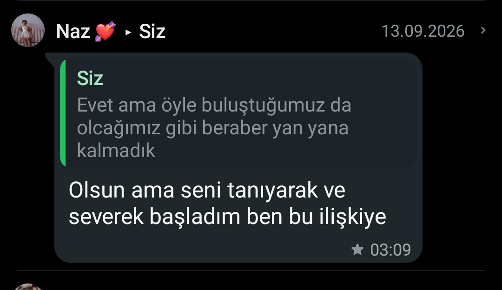
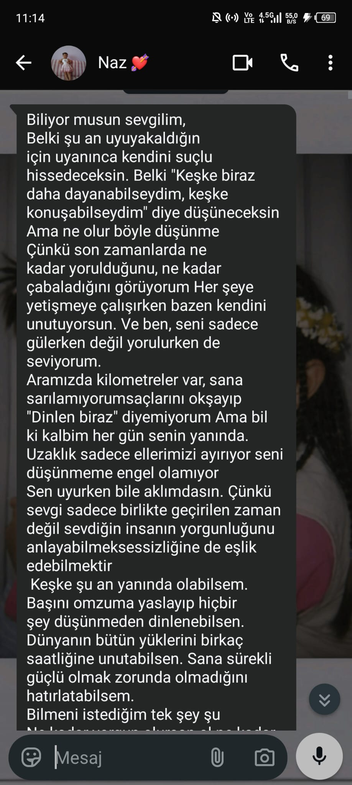
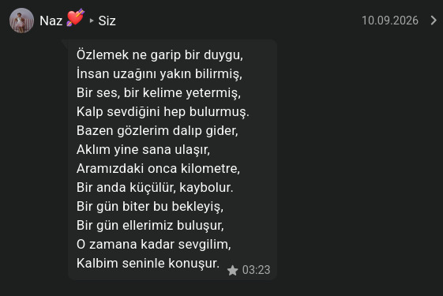
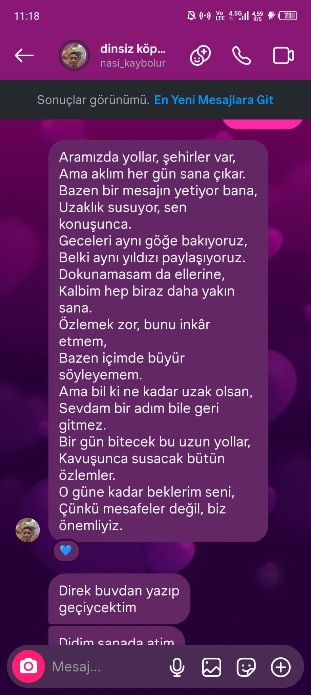
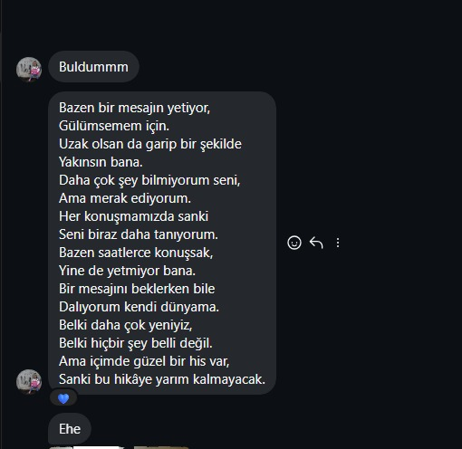
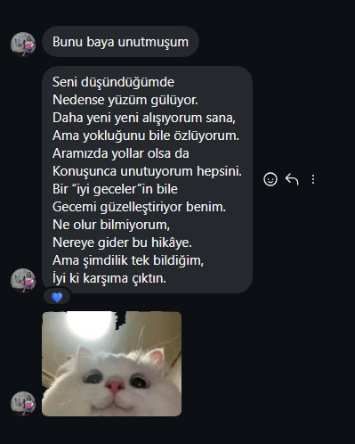
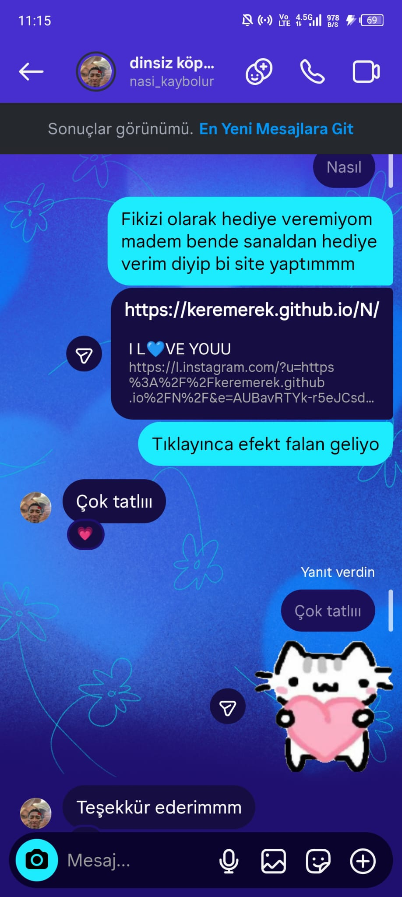
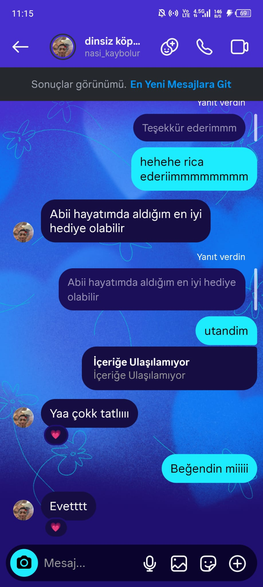

Onca kötü günden sonra yinebir aradayız sevgilimm.
Bazen hikayemiz ara verse de kalplerimiz yine birbirini bulur. Bu küçük sayfa, bizim güzel hatıralarımız için.
Anılarımıza bakmak ister misin aşkımmmSürekli bakıp bakıp gülümsememi sağlayan mesajların
Her bildirimde tebessüm etmemi sağlayan o güzel zamanlar…

mesajlar ♡

zamanlardan ♡
Her mısrasında beni duygulandıran en kötü günümde bile tekrar açıp açıp okuduğum o şiirlerin
Bazı cümleler sadece yazılmakla kalmaz kalbin derinliklerinde, yaşamaya devam eder.

hep saklayacağım ♡

dizelerin ♡

bir hatıra ♡

satırlar ♡
bu sayfanın en güzel yazıları, senin tüm kalbinle ve içtenliğinle yazdığın o güzel sözlerin ♡
Senin İçin Aşkla Yaptığım İlk Site...
Hatırlıyo musunn bitanemmmm ?
Sana ilk kez küçük bir web sitesi yaptığım günü. Yanında olup sana hediye veremiyorum diye bende sanalda olsa bir şeyler yapmak istedim. Her ayrıntıyı senin için düşünmüştüm hatta kodların arasına görmiyeceğini bile bile şiir bile yazmıştım belki bi gün fark edersin diye. Senin mutlu olduğunu görmek o böyle aldığım en güzel hediyeydi mesajını görmek yaptığım her şeye değmişti.
Şimdi bu küçük sayfayı da o günkü heyecanlımla hazırladım yavrum. Çünkü seni hala mutlu ekmek en sevdiğim şeylerden biri.

siteden bir anı ♡

bu karede kaldı ♡
Şimdi, sıra yine birlikte geçireceğimiz güzel günlerde…
Birlikte güleceğimiz, yeni anılar biriktireceğimiz daha nice günlere. İyi ki kalplerimiz yine yan yana. Bundan sonrasını da birlikte el ele, sevgiyle yazalım.
Seni öylesine değil ölesiye seviyorum yavrummmm ♡